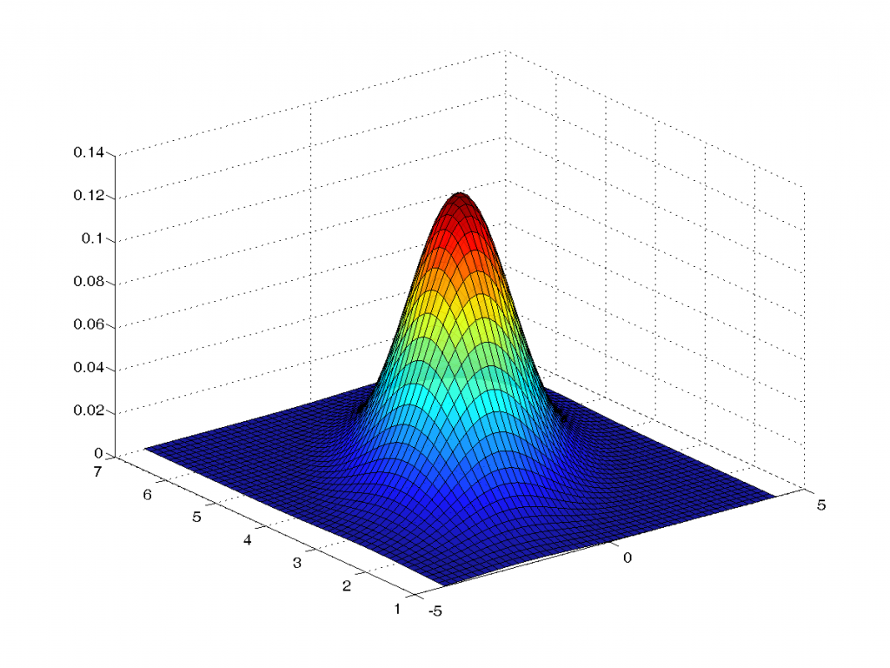
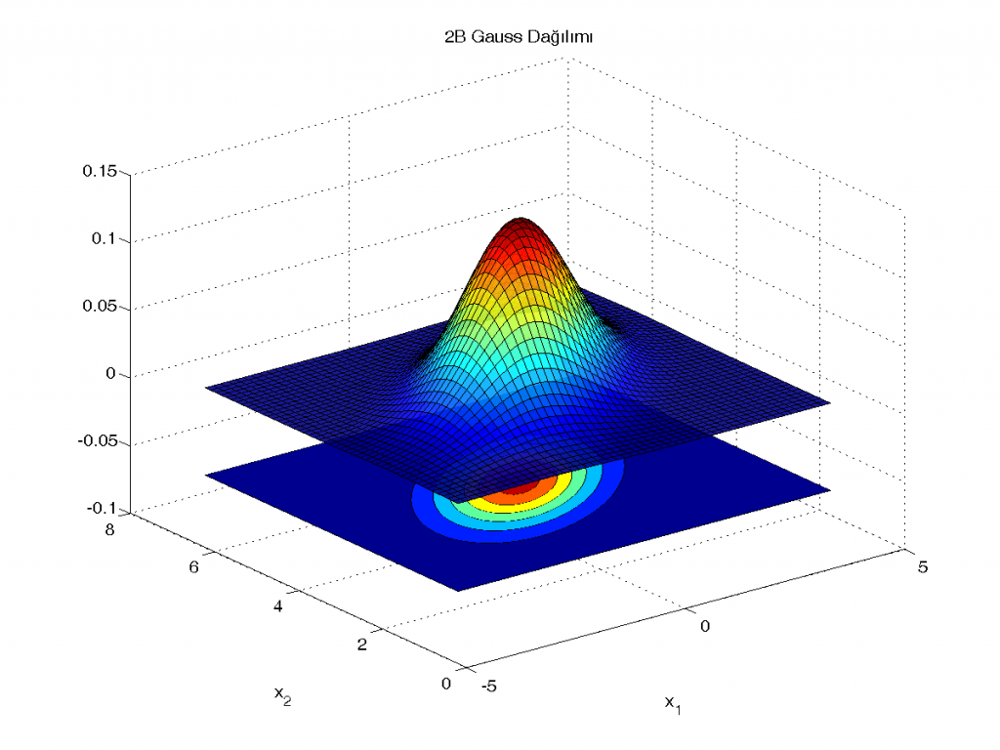
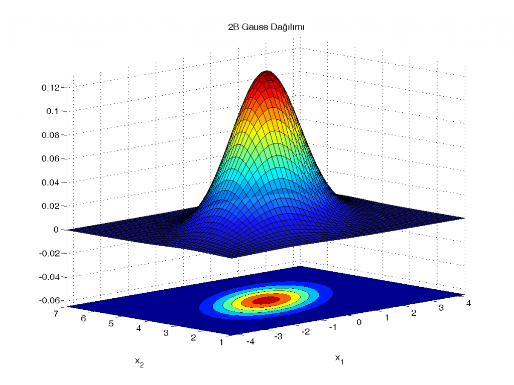
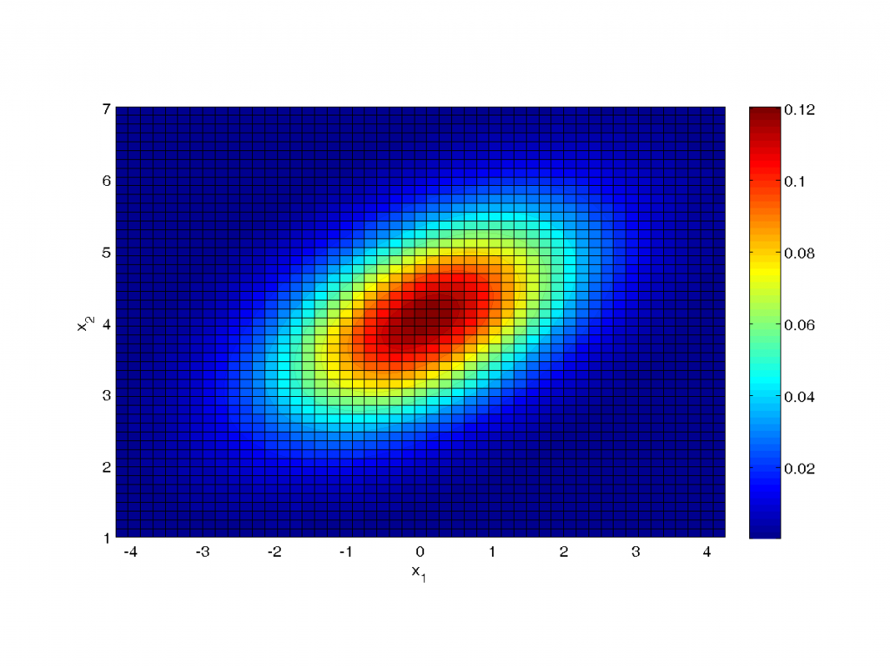

2 boyutlu Gauss dağılımı ve yoğunluk haritası
Bugünkü örnekte MATLAB ile 2B Gauss (normal) dağılımına ait olasılık yoğunluk fonksiyonunu çizeceğiz ve aynı figürde yoğunluk haritasını göstereceğiz. Ardından kamerayı değiştirmeyi göreceğiz.
Ortalama vektörü ve kovaryans matrisi alttaki gibi olsun:
mu = [0 4]; sigma = [2 0.7; 0.7 1];
Şimdi yoğunluk fonksiyonunu hesaplayacağımız iki rastsal değişkenin çizimde görmek istediğimiz değerlerini belirleyelim:
linspace(a,b,n) fonksiyonu [a,b] kapalı aralığında eşit aralıklı olarak uzanan n adet nokta verir. Örnekte kullandığım a ve b değerleri deneyimle verdiğim değerler.n = 50; x1 = linspace(-3*sqrt(sigma(1,1))+mu(1),3*sqrt(sigma(1,1))+mu(1),n); x2 = linspace(-3*sqrt(sigma(2,2))+mu(2),3*sqrt(sigma(2,2))+mu(2),n);
Girdi olarak iki değişken alan bir fonksiyonun değerlerini önce meshgrid ile bir ızgara oluşturarak hesaplamalıyız. Öyle yapalım ve dağılımın yoğunluk fonksiyonunu belirlediğimiz parametreleri kullanarak hesaplayalım:
[X1,X2] = meshgrid(x1,x2); f = mvnpdf([X1(:) X2(:)],mu,sigma); f = reshape(f,length(x2),length(x1));
Şimdi çizimi yapabiliriz:
'FaceAlpha' değerini değiştirerek çizime şeffaflık kazandırdık. Arkada kalan kısımları az da olsa görülebiliyor artık. Bence bu anlaşılırlığı arttıran bir hamle oldu. Renk haritasını da jet seçtik.surf(x1, x2, f,'FaceAlpha',0.90); set(gcf,'renderer','opengl'); colormap(jet) grid on

Her ne kadar şeffaflıkla çizimi şenlendirdiysek de çizimin eliptik yayılımı belli olmuyor. Altına bir de contourf ile yoğunluk haritası çizsek iyi olacak:
'ZData' atamaları ile yoğunluk haritasının her bölümünü z ekseni boyunca aşağı kaydırdık.hold on
[~, h] = contourf(x1,x2,f);
hh = get(h, 'children');
for i = 1:numel(hh)
zdata = ones(size(get(hh(i),'XData')));
set(hh(i),'ZData',zdata-1-max(f(:))/2)
end
hold off
title('2B Gauss Dağılım Foksiyonu ve Yoğunluk Haritası');
xlabel('x_1'), ylabel('x_2')

Çizim fena olmadı. Fakat eksenlerin sınırlarını ve birbirlerine oranlarını belirlersek daha da güzel bir çizim elde edeceğiz. Bunları yapıp ardından bir de view ile görüş açımızı değiştirelim:
xlim([min(x1) max(x1)]) ylim([min(x2) max(x2)]) zlim([-max(f(:))/2 max(f(:))]) ar = get(gca,'DataAspectRatio'); set(gca,'DataAspectRatio', [ar(1) ar(1) ar(1)/ar(2)*ar(3)]); view(-45,10);

Bazen eksen değerleri çok önemli olmayabilir, yalnızca fonksiyonun neye benzediğini merak edebiliriz. Böyle durumlarda eksenleri kapatabiliriz:
axis off
Çizime 3B olarak değil de 2B olarak bakmak istediğimizi düşünelim. Bunu kameranın açısını değiştirerek yapmak mümkün. Tüm yaptıklarımıza üstten (+z'den) bakalım:
axis on
view(0,90)
title('')
colorbar

Bitirmeden önce nasıl çizeriz'i bir yana bırakıp dağılıma bir göz atalım.
mu parametresi görüldüğü üzere rastsal değişkenlerin ortalamasını belirliyor. sigma değeri ise varyans ve kovaryans bilgilerini içeriyor. sigma(1,1) değeri x1 değişkeninin varyansı iken sigma(2,2) değeri x2 değişkeninin varyansını temsil ediyor. sigma(1,2) değeri ise iki değişkenin kovaryansı oluyor. Eğer değişkenler birbiri ile ilintisiz (uncorrelated) ise bu değer sıfır olur. Artı olduğu durumlarda bir değişkenin değeri artarken, diğeri de onunla birlikte artıyor; eksi durumunda ise tam tersi. Örnekte bu değeri 0.7 olarak vermiştim. Pozitif olduğu için biri artarken diğeri de artıyor diyebiliriz. Kendiniz bu değeri (ve kovaryans matrisinin simetrik olması gerektiği için aynı zamanda sigma(2,1) değerini) değiştirerek sonuçları gözlemleyebilirsiniz.